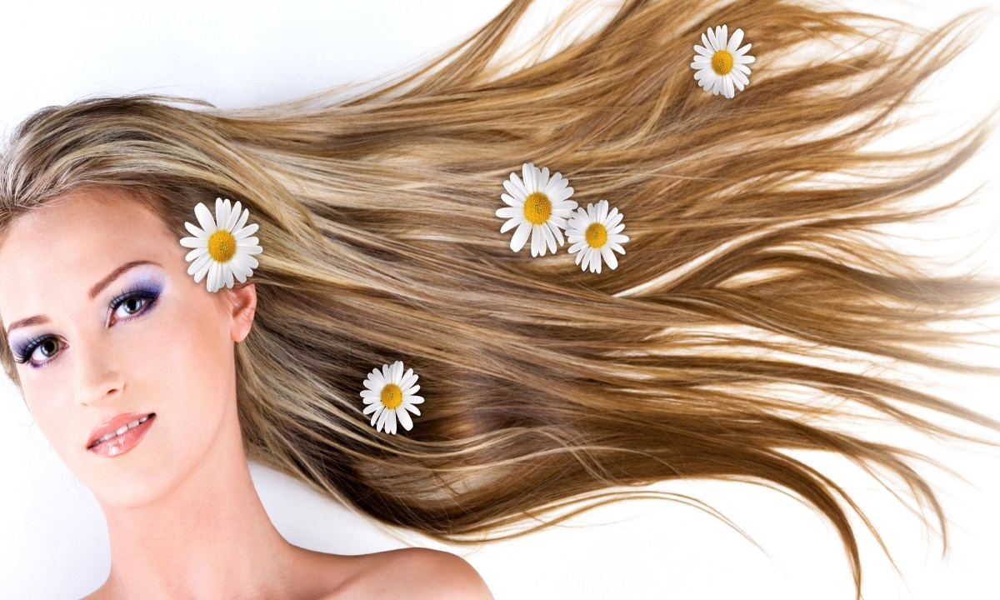
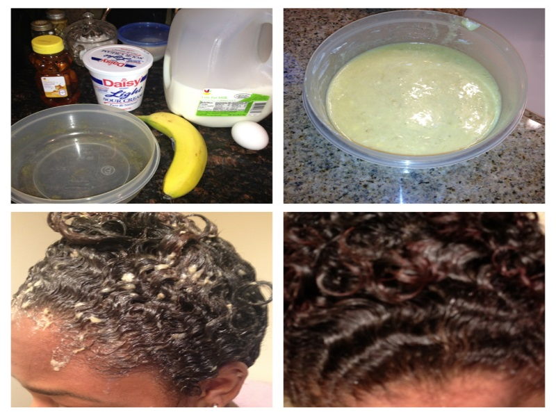

1. Banana and Egg Hair Treatment
Looking for a little more shine in your hair? Simply mix one egg and a mashed up banana. Apply it as a thick paste to your hair and leave it on for 10-30 minutes. Wash it our doing your usual hair washing ritual (if you usually use a store-bought conditioner you'll probably only need to condition the ends). And voila! Super simple, and all natural, good looks tip.
2. Moisturizing Nail Treatment
Soak your nails in olive oil for five minutes. And then sit back and admire your pretty hands.
3. Simple Honey Face Mask
Raw honey is naturally anti-bacterial and a super quick way to get soft, beautiful skin. Once a week use a tablespoon or so of raw honey (not the processed stuff parading as honey) and gently warm it by rubbing your fingertips together. Spread on your face. Leave on for 5-10 minutes and then use warm water to gently rinse it off and pat dry. Then bask in the glow of your honey-awesomeness. This raw honey is awesome, by the way.
4. Apple Cider Vinegar Clarifying Shampoo
For those who are using commercial shampoos: To help eliminate any build up in your hair, mix 1/4 cup organic apple cider vinegar (like this) with 1 cup water. Follow with your usual conditioner.
5. Elbow and Knee Exfoliate and Skin Brightener
Cut an orange in half and rub it on your elbows and knees. Helps soften those rough patches. And it smells good. (Rinse off the sticky mess when you are done.)
6. Gentle Body Scrub
Mix a 2 to 1 ratio of olive oil and sea salt to make a quick and effective body scrub. This helps get rid of dead skin cells creating softer, more glowing skin. And this natural good looks tip is much cheaper that expensive store bought body scrubs.
7. Easy Deep Conditioning Hair Treatment
Want super soft, hydrated hair? This is one of my favorite all natural good looks tips. Use melted coconut oil as a deep conditioning hair and scalp treatment. Massage coconut oil into your scalp and then work it through your hair. Leave it on for a couple of hours and then wash it out using shampoo (no need to condition unless you have really long hair and then maybe just the ends.) Note: For you no poo-ers keep in mind that coconut oil will saturate your hair with awesome goodness that can be really hard to get out with just baking soda and *some* natural shampoos. You may want to try just a little coconut oil on a little section of hair and see if you can get it out before you do this. Otherwise you might have really greasy (but soft!) hair for a few washes. NOT that I'm speaking from personal experience of anything (*cough*).

8. Simple Toxic-Free Shaving Cream
Use coconut oil on your legs as a natural replacement for your shaving cream. Talk about a simple, natural good looks tip.
9. All Natural Black Head Removal
Place 4 or 5 drops of raw honey on an open lemon wedge. Then rub the lemon on your face for a minute, emphasizing any trouble areas. Leave the mixture on for 5 minutes and rinse with cold water. (Keep in mind that citrus can make your skin photosensitive so it's best to do this before bed rather than before going outside).
10. Dry Brushing for Better Skin
Dry brushing is a simple detoxification process for your body. It stimulates a number of organs through a gently massage. It also helps the lymphatic system, eliminates dead skin coatings, strengthens the immune system, can eliminate cellulite, stimulates the hormones, and can help tighten skin through better circulation. Best of all, it's cheap and easy. Learn more about dry brushing and how to do it here. Here's a great skin brush to get you started!
Credits to: thankyourbody